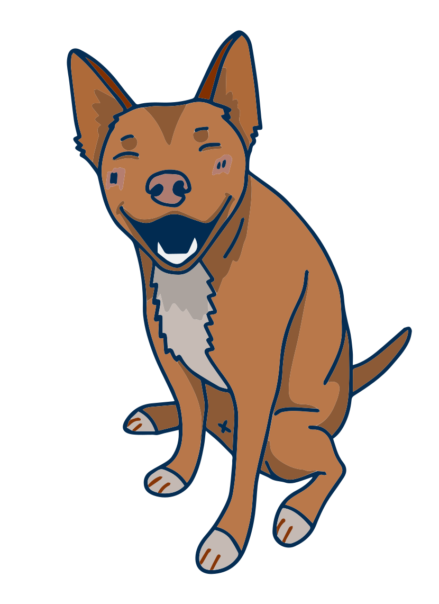
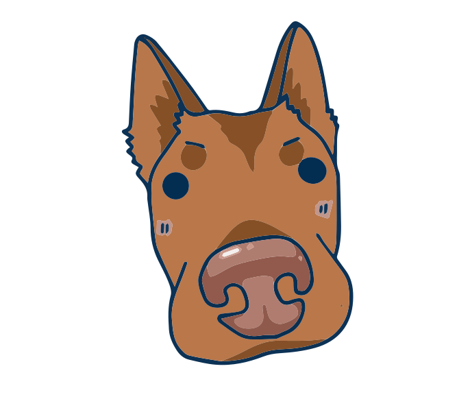
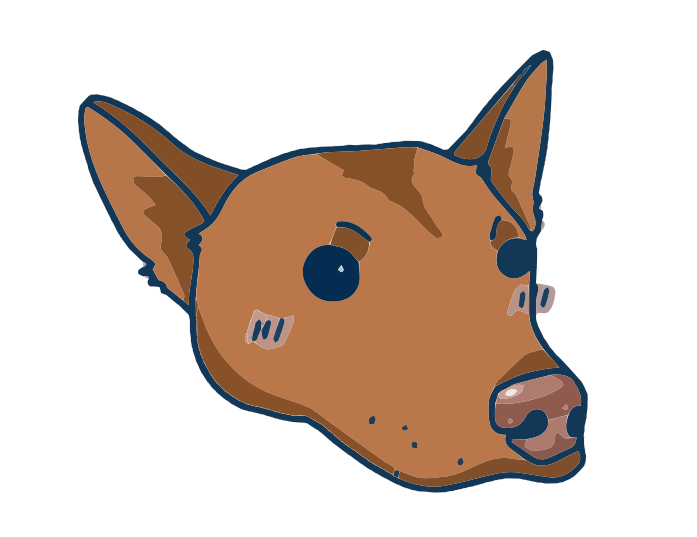

WhisperWoof
Speak and it transcribes, polishes, and routes — all locally. No cloud. No data leaves your machine.
Voice-first personal automation, named after a good dog.
Raw voice in, polished text out
Smart Clipboard
Kanban boards for your text
Organize reusable phrases, replies, and code snippets into named boards. Drag cards between boards. Color-coded columns. Full CRUD.
Cmd+Shift+1-9
Pin up to 9 snippets to global hotkeys. One keypress = instant paste. No app switching.
Frequency tracking
See which snippets you use most. Usage count + last-used time on every card. Human, AI, or voice source badges.
Built for people who talk fast
Local voice-to-text
Whisper STT runs entirely on your machine. No cloud API calls, no latency spikes, no data leaving your laptop. Your voice stays yours.
AI text polish
Ollama removes filler, fixes grammar, adds punctuation. 5 presets or write your own.
Context-aware
Detects your active app. VS Code gets code, Slack gets casual, Mail gets professional.
Cmd+K command bar
Type /todo, /note, /project. Spotlight-style overlay routes text anywhere.
Clipboard + voice history
Everything you say or copy is searchable. Full-text search, images, starred favorites. Never lose a thought again.
MCP plugins
Route voice to Todoist, Notion, Slack — any MCP server works as a plugin.
Voice commands
"Rewrite this." "Translate to Spanish." "Summarize." 10 editing commands.
Privacy lock
One toggle blocks ALL cloud access. Ollama-only, zero network.
Mando's ears
The floating indicator has dog ears that perk up when you speak. Named after a real dog.
Three seconds to polished text
Hold Fn
Mando's ears perk up. You're recording.
Speak
Say whatever. Filler words welcome.
Release
Clean, polished text at your cursor.
Meet your floating assistant

Get WhisperWoof
Free. Open source. Runs on your Mac.

Or build from source:
git clone https://github.com/h3qing/whisperwoof && cd whisperwoof && npm i && npm start